Operating Documentation
Direction 5193574-800, Rev# 22
LightSpeed 7.X Service Methods
Module Version 1.0, Version Date 4/22/10
Operating Documentation |
| Required Persons | Preliminary Reqs | Procedure | Finalization |
|---|---|---|---|
| 2 (FE or mechanical supplier) | Not Applicable | Not Applicable | Not Applicable |
| Item | Qty | Effectivity | Part# | Manufacturer | |
|---|---|---|---|---|---|
| Front and rear cover dollies | 1 | - | - | - | |
Grip the window by the metal band at the top and pull firmly but carefully downward.
Continue to pull until the top of the scan window makes contact with the bottom portion of the scan window.
Illustration 1: Scan Window Removal
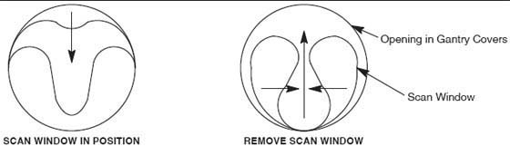
Hold the scan window as shown in Illustration 2 and remove it from between the front and rear covers.
Illustration 2: Removing Gantry Scan (Mylar) Window
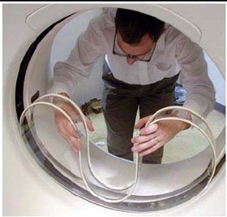
To prevent damage, place the scan window in a secure place.
Lower table to the home (lowest) position.
| ||||
| Potential for injury if the covers are removed and power is “ON”. | ||||
| Always remove the right side cover first, and turn OFF power at the Service Switch Panel. | ||||
Use an 8 mm Hex wrench to unlatch the side cover from the front cover. See Illustration 3.
Illustration 3: Side Cover Latches
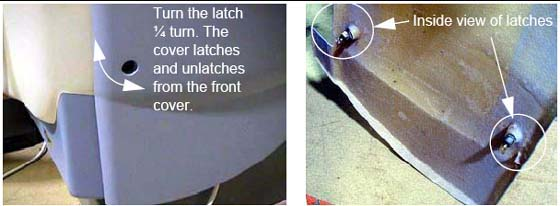
Remove the right side cover by lifting it upward to release the two (2) latches, located on the top edge of the cover. Once removed, the MSUB/TGP left side should be exposed.
Illustration 4: Side and Top Cover Clasp
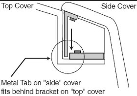
On a new installation, the top covers are shipped ty-wrapped in place. Use a pair of side cutters to remove them, and discard the ty-wraps.
The top cover fans are connected to the gantry using a Molex connector. Locate and disconnect the fan power plug.
Take the end of the top cover closest to you and tilt upwards.
Grip the cover on both sides. The top covers have edge guides that center the cover on the raised ridges of the front and rear covers. This allows the cover’s tab to disengage from the mounting bracket (see Illustration 3).
Slide the cover down using the gantry front and rear covers as support until the cover is at chest level.
Illustration 5: Top cover tabs and bracket
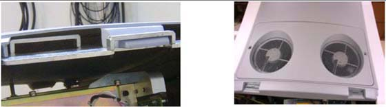
Lift the cover clear, then place the flat end on the floor.
Repeat steps 1-6 for the other top cover.
Refer to the cover removal procedure found in the Service Methods Publication.
| ||||
| DO NOT USE DOLLIES ON UNEVEN SURFACES SUCH AS STEPS OR ELEVATOR THRESHOLDS. THE DOLLIES ARE DESIGNED FOR FLAT, LEVEL FLOORS WITHIN THE SCANNING SUITE ONLY. MISUSE CAN RESULT IN PERSONAL INJURY OR DAMAGE TO COVERS OR OTHER FACILITY ITEMS. | ||||
| ||||
| Rotating arms on the stand are supposed to be stiff. If they fall freely, tighten the tensioning nuts. Loose rotating arms reduce the stability of the dollies when supporting the front cover. Do not lubricate. | ||||
| ||||
| Potential for cover damage. Front and rear cover removal and installation can be safely accomplished by one (1) person using the dollies provided with the system. Failure to use these dollies significantly increases the likelihood of damage to the covers. Do not lean the covers against the walls. FRONT COVER DOLLY SETUP | ||||
Arrange dolly sections for assembly. The base and post can be assembled only one way. Refer to Illustration 6 and Illustration 7.
The base uses two (2) palm screws to clamp the four (4) legs in the open (usage) mode.
The base also uses the same palm screws to prevent the legs from falling in storage mode.
The top post can be inserted in either base and is keyed for proper engagement.
The top post locking pin prevents the sections from separating during use.
Illustration 6: Front Cover Dolly in Storage Mode

Illustration 7: Front Cover Dolly Base Assembly

Unfold the base legs by loosening both palm screws to the top of their travel.
Carefully unfold the legs so that the castors touch the floor.
Tighten the palm screws to clamp the legs between the base top and bottom plates.
| NOTE: | Lifting the base by the riser post while leaving the castors on the floor eases palm screw tightening (see Illustration 7). |
| ||||
| ENSURE BOTH PALM SCREWS ARE TIGHTENED SECURELY AND THE LEGS ARE CLAMPED TIGHTLY BETWEEN THE BASE TOP AND BOTTOM PLATES. FAILURE TO DO SO RESULTS IN INSTABILITY DURING FRONT COVER HANDLING. | ||||
Insert the top post into the base riser post. Align the key for complete engagement.
Insert top post locking pin to secure both top and bottom sections.
Reverse above steps to disassemble.
| NOTE: | For base storage, only one (1) palm screw needs to be tightened. This engages the bottom base plate and the leg ends, preventing the legs from unfolding during transport and storage. |
REMOVAL
Make sure that the three (3) power switches have been turned off.
Assemble the front cover dolly.
Tighten the two (2) shoulder bolts to the gantry securely. This makes cover installation easier (see Illustration 8).
Illustration 8: Front Side Dolly
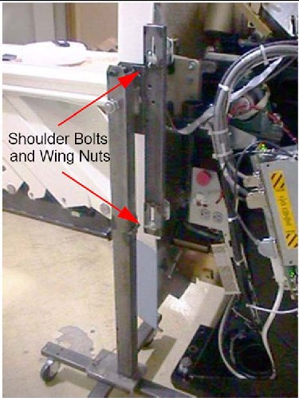
Attach the side dolly to the shoulder bolts and secure assembly with two (2) wing nuts.
Repeat steps a and b to assemble the other side dolly.
Detach the front cover cables J3 and J2 and BKHD J1.
Remove the front cover:
Disengage the upper and lower Cantrell brackets on both sides of the cover.
Using steady but firm pressure, lift each of the lower Cantrell brackets from their associated retainers (see Illustration 9).
Illustration 9: Releasing Cover Brackets
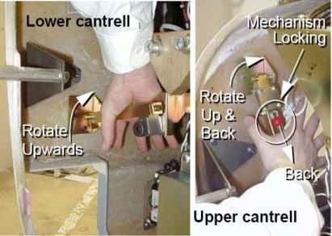
Disengage the locking mechanism on the upper Cantrell brackets by using your thumb to slide the trigger (red lever) back. This releases the locking mechanism and allows you to rotate the Cantrell bracket upward with steady and firm pressure.
Disengage the rubber retaining straps on both sides.
Lift and rotate the cover locking arm to the unlocked position.
Illustration 10: Rubber Retaining Straps and Cover Locking Mechanism
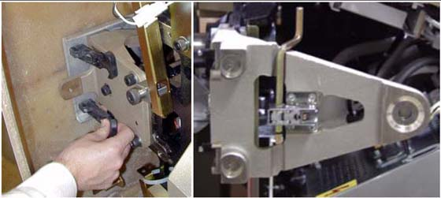
Rotate the front cover away from the gantry.
Move the front cover away from gantry giving enough space (about 1524 mm [5 ft]) between the front cover and the gantry.
Pull the locking pin and rotate the front cover away from the gantry. Place the locking pin in one of the side dolly perforations (see Illustration 11).
Illustration 11: Releasing Front Cover Dolly Hinge

Illustration 12: Front Cover Removal Sequence

Rotate the cover horizontally and move it back and over the table to a safe location. Once in a safe location, you may over-rotate the cover full vertically but upside down.
Assemble the rear cover dolly.
Tighten the two (2) shoulder bolts to the rear cover.
Illustration 13: One Side of Rear Cover Dolly
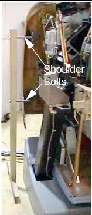
Fit the side dolly through the shoulder bolts and secure the assembly with two (2) wing nuts (see Illustration 13).
Repeat steps a and b for the other side dolly.
| ||||
| Potential for injury if the covers are removed and power is ON. | ||||
Disconnect cables on the right side of the rear cover.
Remove rear cover.
Disengage the upper and lower Cantrell brackets on both sides of the rear cover.
Using steady but firm pressure, lift each of the lower Cantrell brackets from their associated retainers (see Illustration 9).
Disengage the locking mechanism on the upper Cantrell brackets by using your thumb to slide the trigger (red lever) back. This releases the locking mechanism and allows you to rotate the Cantrell bracket upward with steady and firm pressure.
Disengage the rubber retaining straps on both sides.
Remove dolly side rails.
Remove two inboard caster towers, and install and pin them at gantry end of dolly.
Elevate all caster towers until their casters contact the floor.
Remove gantry end HSA dolly end, replace dolly pins in the frame receptacles, retain HSA dolly end.
Retrieve and attach pickers to gantry end of table with 16 millimeter (mm) by 40 mm cap screws.
Remove and retain spacers and nuts from 16mm x 240 mm SHCS. Retain for return.
Remove foot end HSA dolly end, replace dolly pins in the frame receptacles, retain HSA dolly end.
Remove and retain 5/16 inch diameter pivot lock pin. Note that this pin is slightly smaller than all other pins used on the dolly, and the only pin that will work well at the pivot.
Remove and retain the sheet metal component at each side of the base weldment and both screws.
Pivot frame open and surround table, maintaining approximate equal clearance between the frame and table on each side. The caster towers may require adjustment to allow ease of movement.
Pivot frame back to approximately square.
Attach and pin lifting arms to pickers.
Carefully and squarely align the 16 mm x 240 mm SHCS to the table. Caster tower adjustments may be required.
Thread the 16 mm x 240 mm SHCS into table until their threads extend inboard of the base weldment.
Remove side cover bracket.
Attach and pin arm separator in place.
Insert pivot lock pin.
Attach and pin HSA dolly ends. Some height adjustments may be required. Insure dolly pins are fully seated.
Remove, stow, and pin caster towers. They may need adjustments to ease pin insertion.
Attach and pin side rails. Be alert for pinch points of fingers between the side-rail and lifting arm. Best results are often achieved by pinning one side-rail before inserting the second.
Manually rotate jack screw to take up play at pickers.
Elevate HSA dolly ends for transport.
Verify the blue handle/foot end is 14.5 inches away from the rectangular tunnel in the leg. If not:
Remove the shroud on the patient's left side
Detach the transit arm travel limiter
Verify the table transit lock is positioned correctly
Reattach the shroud on the patient's left side
Lower HSA dolly ends until table is in contact with floor.
Unpin, remove, and retain side rails, replace pins place pins in a convenient location on HSA dolly end.
Attach and pin all caster towers in active positions. Height adjustments may be required to ease pin insertion.
Elevate caster towers until their casters are in contact with floor.
Remove HSA dolly ends and replace dolly pins in receptacles in frame.
Elevate caster towers to appropriate height. A good target is to elevate until the dolly pins clear the floor, and are supported by their rings.
Rotate jackscrew to tilt table.
Regularly observe the clearance between the table and the floor; adjust caster towers to maintain an effective distance of approximately one inch, depending on the surfaces and thresholds to be traversed.
Regularly observe the clearance between the pivot pin of the frame and the table. Excessive rotation of the table may cause the rounded “sweep” of the table to contact the frame, and subsequently damage the table.
The following Personnel are required:
| Required Persons | Preliminary Reqs | Procedure | Finalization |
| 2 (FE or mechanical supplier) |
No special Tools or Test Equipment are required.
At each corner, select one of the three open holes.
Illustration 14: Selecting an Open Hole
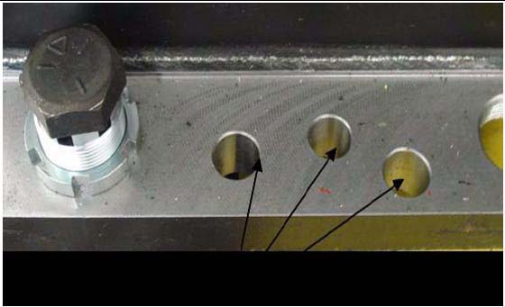
Using the blue dollies, raise the gantry high enough to install a wheel at each corner.
Insert the brass bushing into the selected open corner hole.
Illustration 15: Insert the Brass Bushing
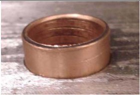
Install the wheel bolt through the brass bushing and the gantry base.
Illustration 16: Wheel bolt through brass bushing (left) and through gantry base (right)
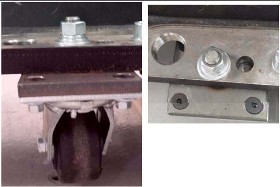
Tighten the nut assembly. (See Illustration 16.)
Repeat steps 1-5 for each remaining corner.
Lower and remove blue dollies.
Attach the bumpers in the same holes as the blue dollies.
Illustration 17: Position Bumper Bracket
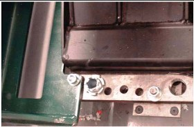
Tighten all mounting hardware.
Illustration 18: Install Bracket Bolts and Tighten
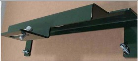
| NOTE: | Bumpers protect the gantry from damage and should always be used when moving the gantry into elevators. |
The mounting plate uses the same holes as the blue dollies.
Attach the handles to the plate as shown in Illustration 19 and Illustration 20.
Illustration 19: Position Mounting Plate and Handles
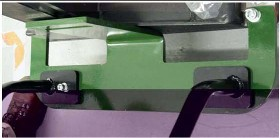
Illustration 20: Install Handle Bolts and Tighten
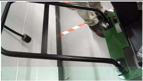
Tighten all mounting hardware.
| NOTE: | Use the handles to push, pull, and maneuver the gantry in tight corridors or when pushing the gantry into an elevator. |
No finalization steps.